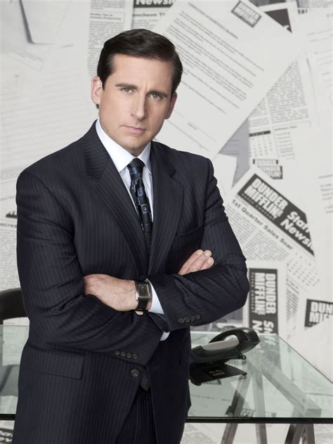
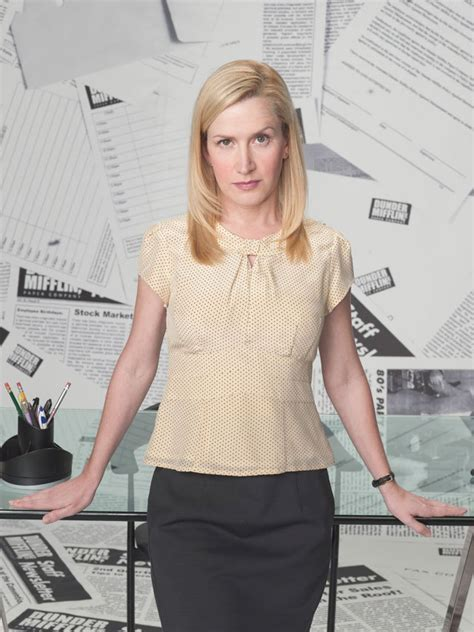

Michael Scott

Jefe misógino racista que cree que es cool
Jim Halpert
Empleado en el sector de ventas.
Direcciona toda su energía en hacerle bromas a Dwitgth y hablar con Pam, su interés amoroso.
Pamela Beesley
Recepcionista en la oficina de Dunder Mifflin.
Se podría decir que ella es quien más trabaja de toda la oficina ya que básicamente le resuelve la vida a Michael, el gerente se la sucursal. En sus ratos libres ayuda a Jim en sus bromas.
Dwight Shrute
Recepcionista en la oficina de Dunder Mifflin.
Se podría decir que ella es quien más trabaja de toda la oficina ya que básicamente le resuelve la vida a Michael, el gerente se la sucursal. En sus ratos libres ayuda a Jim en sus bromas.
Andy Bernard
Empleado en el sector de ventas.
Hombre con problemas de ira pero reformado, no sabe vender pero lo intenta.
Stanley Hudson
Empleado en el sector de ventas.
Odia su trabajo, odia a su jefe (con justa razón) y odia su vida, dedica su tiempo en la oficina a resolver crucigramas e ignorar a todos hasta la hora de salida.
Toby Flenderson
Empleado en Recursos humanos.
Padre divorciado y de sueños frustrados, se limita a hacer su trabajo y a intentar que no se maten entre todos en la oficina. Secretamente enamorado de Pam de una forma algo creppy
Angela Martin

Empleada en el sector de contaduría.
Toda su amabilidad es solo para sus gatos por lo que se dedica a odiar a todos y hacer su trabajo, ademas claro de ser fanática de la religión.
Sinopsis
"The Office" es una serie de comedia que sigue las vidas y las interacciones cómicas de los empleados de la sucursal de la empresa de papel Dunder Mifflin en Scranton, Pennsylvania. A través de un estilo de falso documental, la serie muestra las dinámicas laborales, las relaciones personales y las situaciones absurdas que ocurren en la oficina, destacando la torpeza del jefe Michael Scott y el peculiar elenco de personajes que lo rodea. La serie combina humor incómodo con momentos emotivos, explorando tanto los desafíos de la vida en la oficina como las conexiones humanas que se forman en un entorno inusual.
¡Haz click para ver las temporadas!
- Temorada 1
- 6 Capitulos
- Temporada 2
- 22
- Temporada 3
- 23
- Temporada 4
- 14
- Temporada 5
- 28
- Temporada 6
- 26
- Temporada 7
- 26
- Temporada 8
- 24
- Temporada 9
- 23